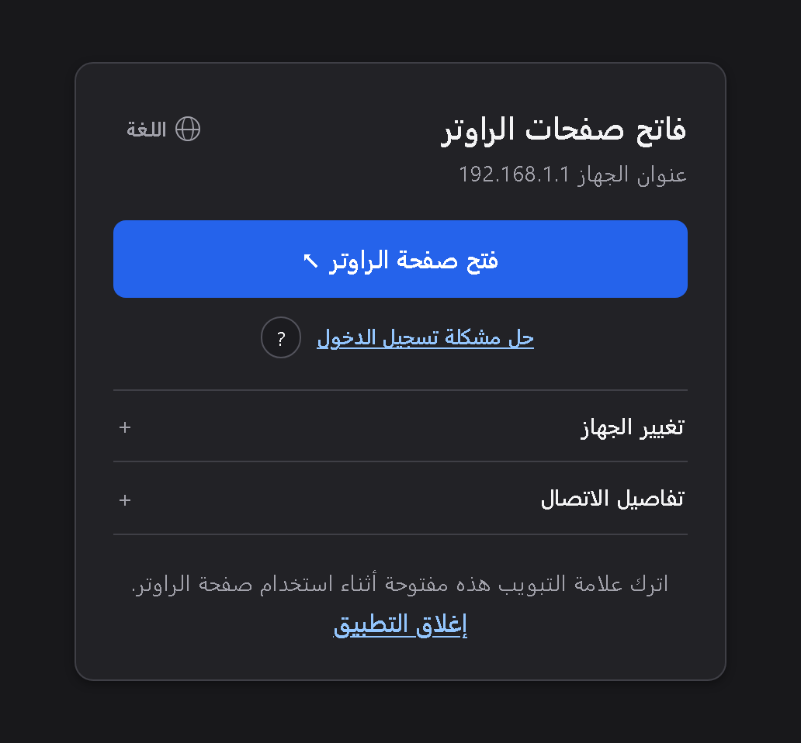

افتح صفحات الراوتر والأجهزة القديمة
افتح 192.168.1.1 وراوترات WE وهواوي وZTE والطابعات والأجهزة التي يحظرها Chrome وEdge وAndroid.
ملاحظات التثبيت
- أندرويد: بدون روت وبدون VPN. عند الطلب، اسمح بالتثبيت من مصادر غير معروفة.
- ويندوز: نسخة محمولة بدون تثبيت. إذا ظهرت نافذة Windows SmartScreen، اضغط More info ← Run anyway.
- لينكس (x86_64): شغّل
chmod +x legacy-router-opener && ./legacy-router-openerفي الطرفية. - ماك (Apple Silicon / Intel): شغّل
chmod +x legacy-router-opener-macos-arm64 && xattr -d com.apple.quarantine legacy-router-opener-macos-arm64 && ./legacy-router-opener-macos-arm64في الطرفية (أو-amd64لمعالجات Intel).
الأجهزة والأخطاء المدعومة
- الراوترات: WE, TE Data, Vodafone, Orange, Etisalat — Huawei (HG531, HG532, HG630, DG8045)، ZTE (H108N, H168N)
- الطابعات والشبكة: طابعات HP EWS، أجهزة NAS، وكاميرات المراقبة
- الخوادم والسويتشات: Dell iDRAC 6/7، HPE iLO 2/3/4، سويتشات Cisco / HP، أجهزة APC UPS
ERR_SSL_VERSION_OR_CIPHER_MISMATCHSSL_ERROR_UNSUPPORTED_VERSIONDH_KEY_TOO_SMALLERR_SSL_UNSAFE_LEGACY_RENEGOTIATION_DISABLED
التفاصيل التقنية والبروتوكولات
- ويندوز ولينكس وماك: TLS 1.0–1.3 وRC4/3DES و1024-bit RSA وإعادة التفاوض القديمة والرجوع التلقائي إلى HTTP (:80) (وللأجهزة النادرة التي تتطلب SSLv3 أو 512-bit DH استخدم HTTP :80 أو
desktop/legacy/index.mjsفي المستودع أو تطبيق أندرويد). - أندرويد (.apk): كل ما سبق بالإضافة إلى دعم مدمج لبروتوكول SSLv3 ومفاتيح 512-bit DHE-RSA عبر Bouncy Castle.
معاينة التطبيق
